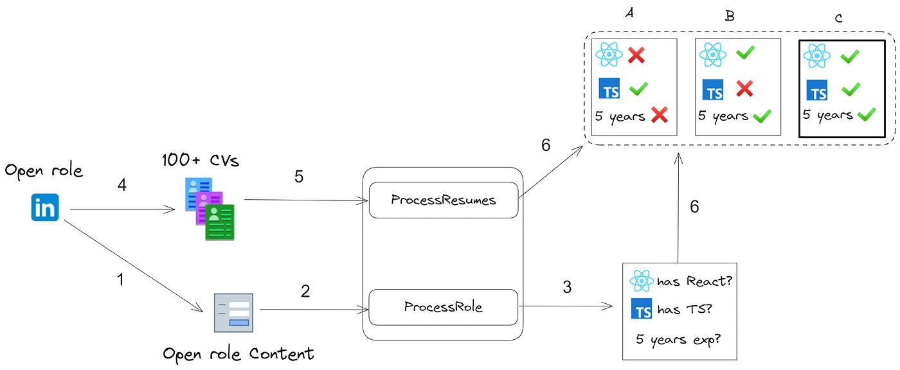

Resume Processing Example¶

ExtractThinker can process resumes and job descriptions, comparing requirements against candidate qualifications. This guide shows how to use ExtractThinker for automated resume screening and matching.
Basic Resume Processing¶
Here's a complete example of processing job requirements and matching them against candidate resumes:
from extract_thinker import Extractor, Contract, DocumentLoaderPyPdf, LLM
from typing import List, Optional
from pydantic import Field
# Define the job role contract
class RoleContract(Contract):
company_name: str = Field("Company name")
years_of_experience: int = Field("Years of experience required. If not mention, calculate with start date and end date")
is_remote: bool = Field("Is the role remote?")
country: str = Field("Country of the role")
city: Optional[str] = Field("City of the role")
list_of_skills: List[str] = Field("""
list of strings, e.g ["5 years experience", "3 years in React", "Typescript"]
Make the lists of skills to be a yes/no list for matching with candidates
""")
# Define the resume contract
class ResumeContract(Contract):
name: str = Field("First and Last Name")
age: Optional[str] = Field("Age with format DD/MM/YYYY. Empty if not available")
email: str = Field("Email address")
phone: Optional[str] = Field("Phone number")
address: Optional[str] = Field("Address")
city: Optional[str] = Field("City")
total_experience: int = Field("Total experience in years")
can_go_to_office: Optional[bool] = Field("Can go to office. If city/location is not provider, is false. If is the same city, is true")
list_of_skills: List[bool] = Field("Takes the list of skills and returns a list of true/false, if the candidate has that skill")
Processing Job Requirements¶
First, process the job requirements document:
# Initialize extractor for job role
extractor_job_role = Extractor()
extractor_job_role.load_document_loader(DocumentLoaderPyPdf())
extractor_job_role.load_llm("gpt-4o")
# Extract job requirements
role_result = extractor_job_role.extract(
"Job_Offer.pdf",
RoleContract
)
# Convert to YAML format for better readability
job_role_content = "Job Requirements:\n" + json_to_yaml(json.loads(role_result.json()))
Processing Candidate Resumes¶
Then process candidate resumes against the job requirements:
# Initialize extractor for candidate resume
extractor_candidate = Extractor()
extractor_candidate.load_document_loader(DocumentLoaderPyPdf())
# Configure LLM with Groq
llm = LLM("groq/llama3-8b-8192") # default model
extractor_candidate.load_llm(llm)
# Process resume with job context
result = extractor_candidate.extract(
"CV_Candidate.pdf",
ResumeContract,
content=job_role_content # Provide job requirements as context
)
Advanced Configuration with Router¶
For production environments, you can configure a router with multiple models and fallbacks:
def config_router():
rpm = 5000 # Rate limit in requests per minute
model_list = [
{
"model_name": "Meta-Llama-3-8B-Instruct",
"litellm_params": {
"model": "deepinfra/meta-llama/Meta-Llama-3-8B-Instruct",
"api_key": os.getenv("DEEPINFRA_API_KEY"),
"rpm": rpm,
},
},
{
"model_name": "Mistral-7B-Instruct-v0.2",
"litellm_params": {
"model": "deepinfra/mistralai/Mistral-7B-Instruct-v0.2",
"api_key": os.getenv("DEEPINFRA_API_KEY"),
"rpm": rpm,
}
},
{
"model_name": "groq-llama3-8b-8192",
"litellm_params": {
"model": "groq/llama3-8b-8192",
"api_key": os.getenv("GROQ_API_KEY"),
"rpm": rpm,
}
},
]
# Add fallback models
fallback_models = [
{
"model_name": "claude-3-haiku-20240307",
"litellm_params": {
"model": "claude-3-haiku-20240307",
"api_key": os.getenv("CLAUDE_API_KEY"),
}
}
]
router = Router(
model_list=model_list + fallback_models,
default_fallbacks=["claude-3-haiku-20240307"],
context_window_fallbacks=[
{"Meta-Llama-3-8B-Instruct": ["claude-3-haiku-20240307"]},
{"groq-llama3-8b-8192": ["claude-3-haiku-20240307"]},
{"Mistral-7B-Instruct-v0.2": ["claude-3-haiku-20240307"]}
],
set_verbose=True
)
return router
Common Use Cases¶
- Automated resume screening
- Skill matching against job requirements
- Experience verification
- Location compatibility checking
- Batch processing of multiple resumes